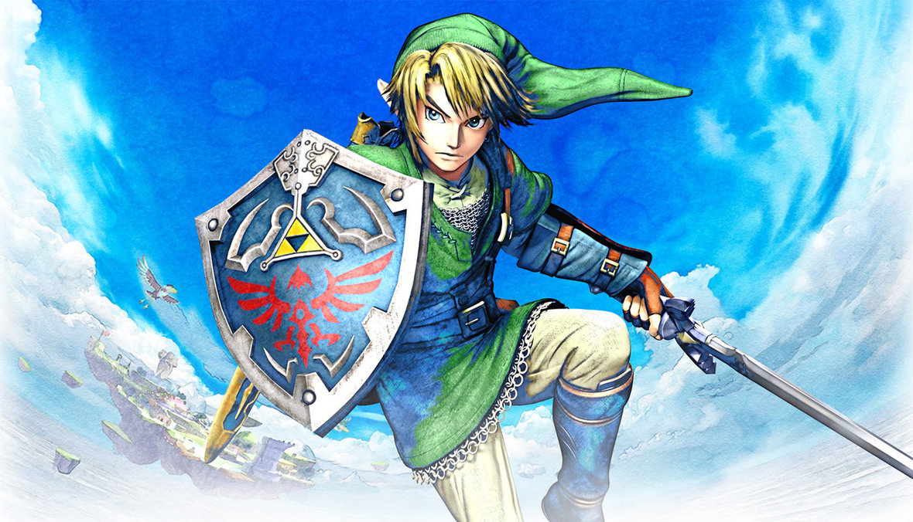
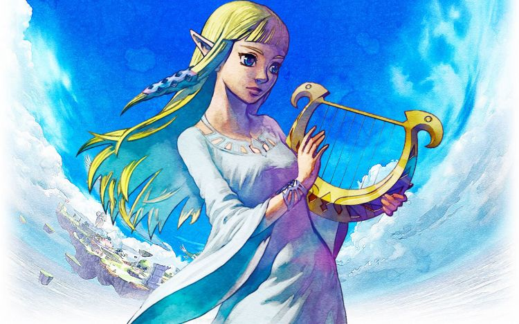
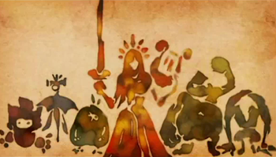
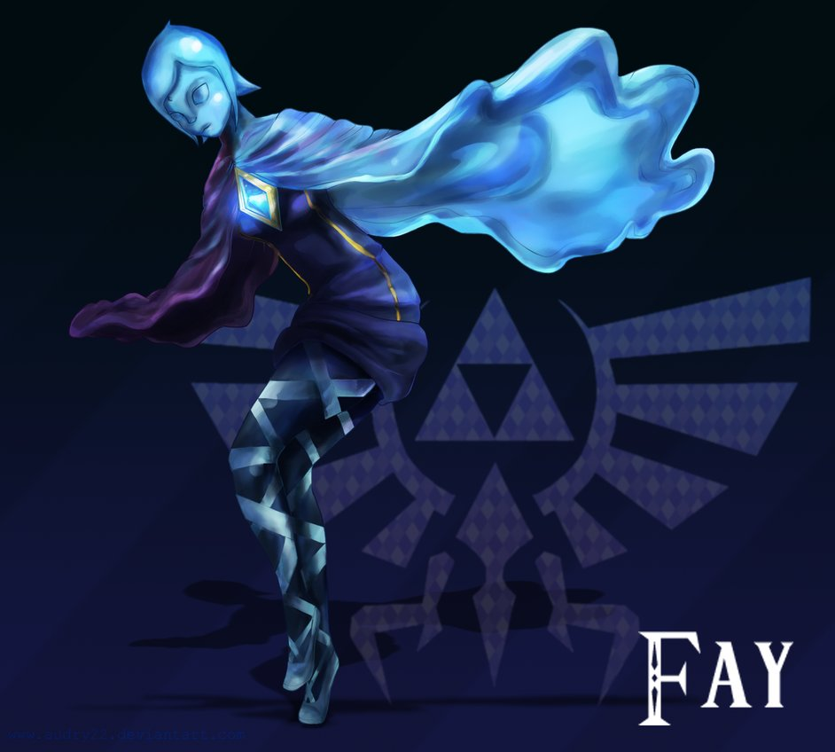
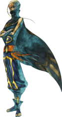
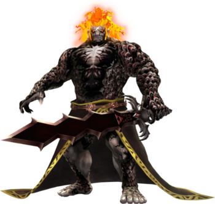
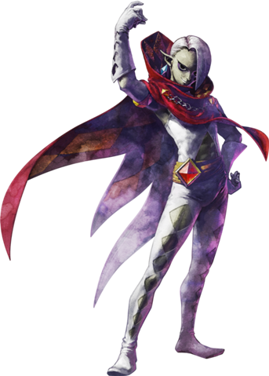
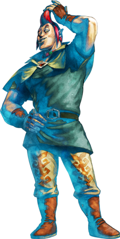

| Personajes Principales |
| Nombre |
Descripcion |
Imagen |
| Link |
Es el nombre del protagonista de The Legend of Zelda. Es generalmente representado como un niño o joven valiente, con vestimenta de color verde que abandona su hogar para cumplir su destino: luchar contra las fuerzas malignas que amenazan la tierra de Hyrule. |
 |
| Zelda |
Es uno de los miembros más importantes de la Familia Real de Hyrule. Desempeña un papel muy importante dentro de la saga The Legend of Zelda. Pese a que los juegos hacen gala a su nombre, en casi todos ellos el personaje jugable es Link. |
 |
| Diosa Hylia |
Es un personaje que aparece en The Legend of Zelda: Skyward Sword y en The Legend of Zelda: Breath of the Wild. Se la representa en todo el mundo por medio de estatuas e imágenes, a menudo mostrando tener alas angelicales y sosteniendo una espada con su mano derecha. Aunque en un principio era una entidad divina, más tarde y por su propia elección renace en forma mortal como la primera encarnación de Zelda, siendo presumiblemente la primera miembro de la Familia Real de Hyrule. Esto explica los poderes mágicos transmitidos dentro de este linaje. |
 |
| Fay |
Ella es un espíritu que reside dentro de la Espada Divina, creada por Hylia para guiar al héroe elegido en su periplo. Su forma de hablar sigue modelo de un ser de inteligencia artificial, que suelen aparecer en la ficción. Su diálogo está representado por audible, pero incomprensible. Físicamente, ella tiene un parecido a la Reina de las Hadas de The Legend of Zelda: The Wind Waker y Four Swords Adventures, el significado de esto, si lo hay, se desconoce. |
 |
| Impa |
Es uno de los personajes más recurrentes en la saga de The Legend of Zelda. Ella por lo general es la niñera o guardaespaldas de la Princesa Zelda, guardando por ello una relación muy estrecha con la Familia Real. Además, con frecuencia ayuda a Link guiándolo en algún punto de su aventura. Impa en la saga de The Legend of Zelda es la única confirmada como verdadera Sheikah |
 |
| El Heraldo de la Muerte |
Es uno de los dos antagonistas principales de The Legend of Zelda: Skyward Sword. Es el origen de todo mal, con un inmenso poder maligno capaz de destruir el mundo entero. Se dice que se reencarna en cada era y presenta un aspecto diferente dependiendo de la persona que le vea. Su objetivo es adueñarse del poder omnímodo de la Trifuerza y dominar el mundo con la ayuda de sus huestes demoníacas.
Con el paso de los años y al ser sellado por la Diosa Hylia, el Heraldo se transformó en la criatura conocida como el Durmiente. |
 |
| Grahim |
Es uno de los dos antagonistas principales de The Legend of Zelda: Skyward Sword. Él, autoproclamado señor de los demonios, desató a una horda de monstruos en las Tierras Inferiores durante los acontecimientos del juego. Él está buscando activamente a Zelda, y es capaz de detectar su presencia. A pesar de que inicialmente no ve a Link como una amenaza para sus planes, a medida que el juego progresa, cada vez esta más frustrado por la interferencia de Link. |
 |
| Personajes Secundarios |
| Nombre |
Descripcion |
Imagen |
| Malton |
Es un personaje de The Legend of Zelda: Skyward Sword. Residente de Altárea, rival de Link y uno de los jóvenes que estudia en la Academia de Caballeros. Él tiene una envidia especial a Link por estar tan unido a Zelda. Malton parece desear amorosamente a Zelda y tiene fantasías románticas con ella. A pesar de que inicialmente parece presuntuoso y miente en cuanto a su atracción a Zelda, en el transcurso del juego, su personalidad cambia para bien. Él está muy orgulloso de su distintivo peinado, el cual es compartido con su pelícaro. |
 |